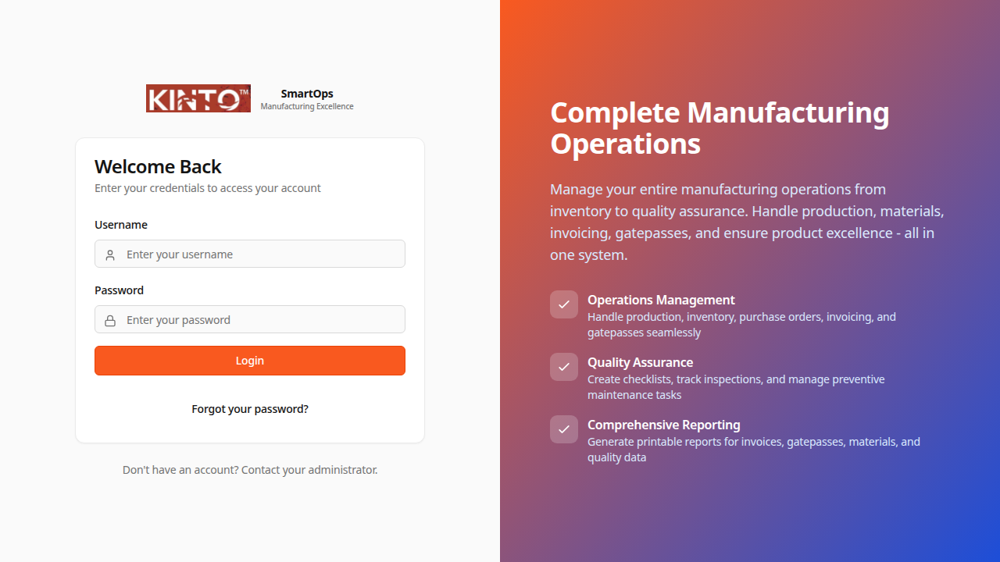
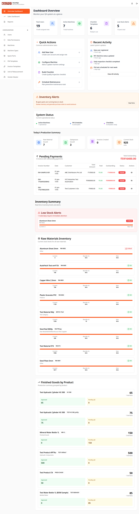
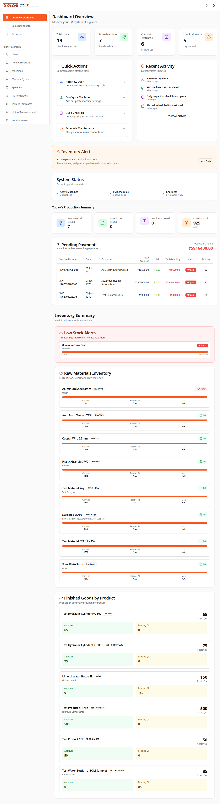
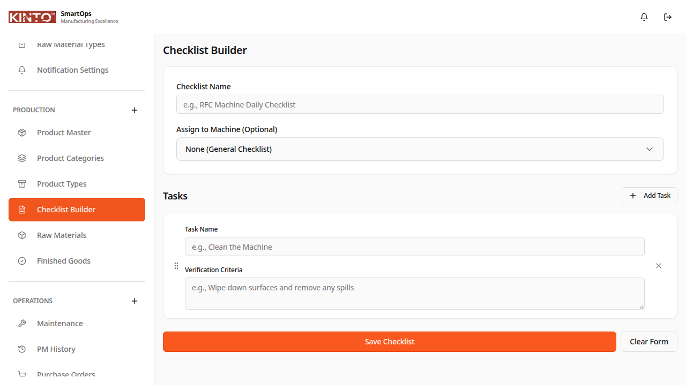
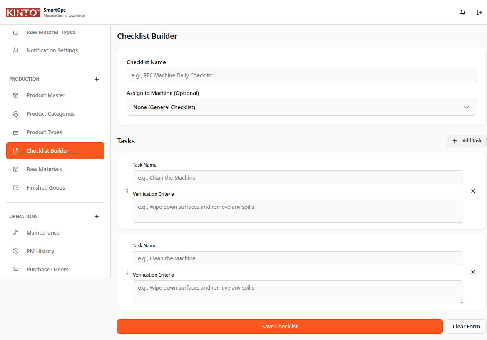
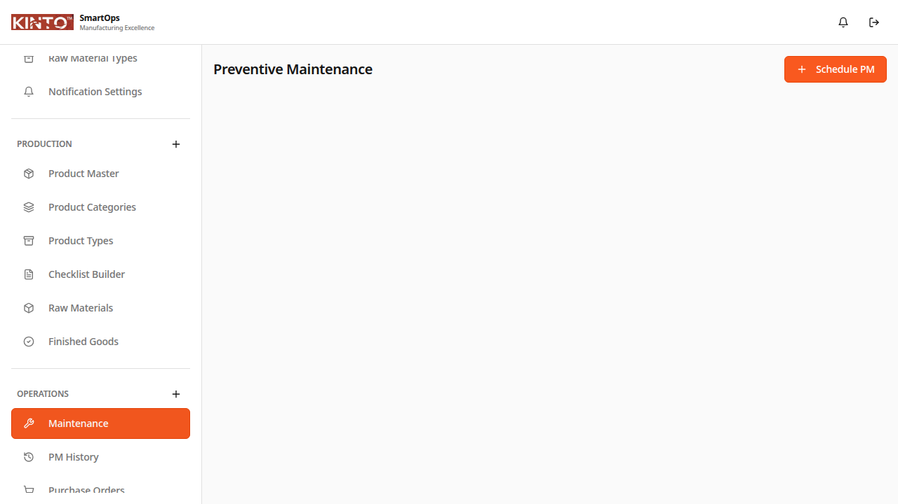
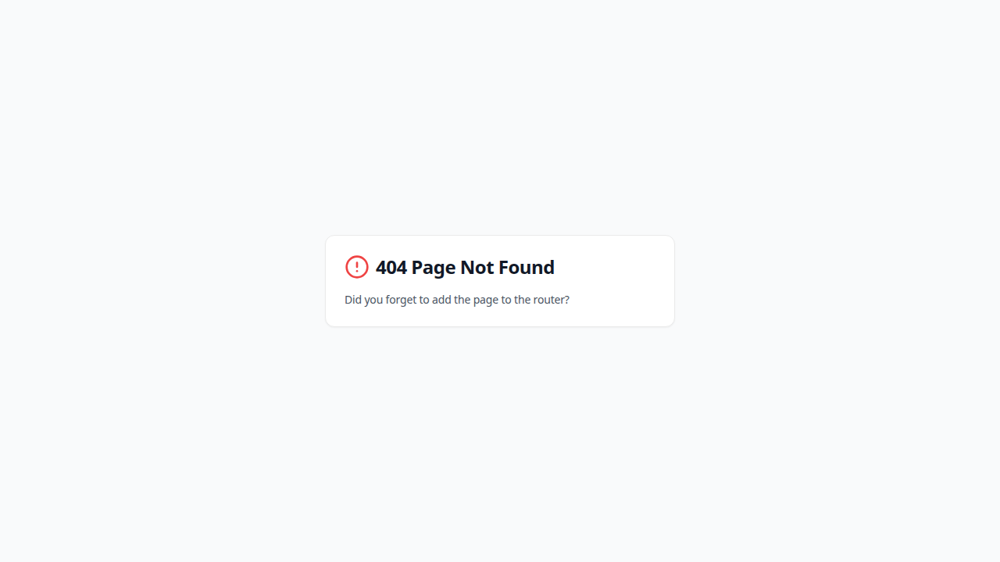
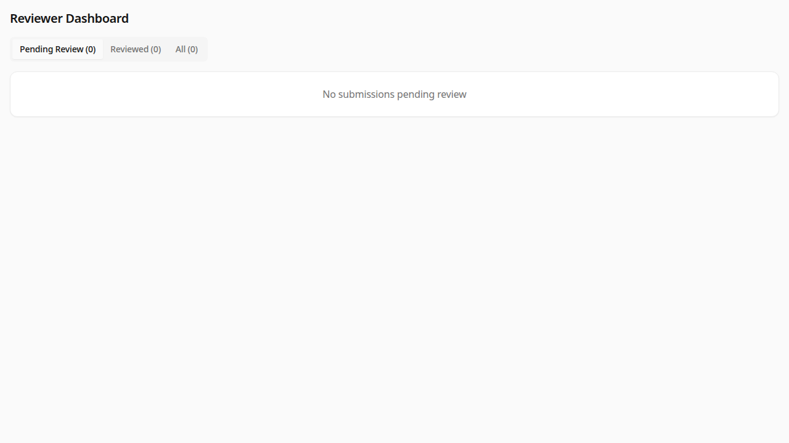

1. పరిచయం
KINTO Smart Ops అంటే ఏమిటి?
KINTO Smart Ops అనేది తయారీ పరిశ్రమల కోసం రూపొందించబడిన సమగ్ర కార్యకలాపాలు మరియు నాణ్యత నిర్వహణ వ్యవస్థ. ఈ వ్యవస్థ క్రింది అంశాలను నిర్వహిస్తుంది:
- ✅ నాణ్యత హామీ (QA) - రోజువారీ చెక్లిస్ట్లు మరియు తనిఖీలు
- ✅ నివారణ నిర్వహణ (PM) - షెడ్యూల్ చేసిన మెయింటెనెన్స్ పనులు
- ✅ ఇన్వెంటరీ నిర్వహణ - ముడి పదార్థాలు మరియు పూర్తి వస్తువులు
- ✅ అమ్మకాలు & ఇన్వాయిసింగ్ - GST-compliant ఇన్వాయిస్లు
- ✅ డిస్పాచ్ ట్రాకింగ్ - 5-దశల డెలివరీ వర్క్ఫ్లో
- ✅ పేమెంట్ ట్రాకింగ్ - FIFO allocation మరియు గడువుల పర్యవేక్షణ
- ✅ ఉత్పత్తి నిర్వహణ - BOM-driven raw material issuance
- ✅ రిపోర్టింగ్ & అనలిటిక్స్ - పూర్తి వ్యాపార అంతర్దృష్టులు
📱 మొబైల్-ఫ్రెండ్లీ: KINTO Smart Ops ను మీరు డెస్క్టాప్, ట్యాబ్లెట్, లేదా స్మార్ట్ఫోన్ నుండి ఉపయోగించవచ్చు. ఫ్యాక్టరీ ఫ్లోర్లో పనిచేసేందుకు పూర్తిగా అనుకూలీకరించబడింది.
ప్రధాన లక్షణాలు
🎯 పాత్ర-ఆధారిత యాక్సెస్ కంట్రోల్
వ్యవస్థ నాలుగు ప్రధాన పాత్రలను మద్దతు ఇస్తుంది:
- Admin - పూర్తి వ్యవస్థ కాన్ఫిగరేషన్ మరియు సెటప్
- Operator - చెక్లిస్ట్ పూర్తి చేయడం మరియు PM అమలు
- Reviewer - నాణ్యత తనిఖీలు మరియు ధృవీకరణ
- Manager - పర్యవేక్షణ, నివేదికలు, మరియు అనుమతులు
2. ప్రారంభించడం
2.1 అప్లికేషన్కు యాక్సెస్ చేయడం
దశ 1: లాగిన్ పేజీని తెరవండి
- మీ వెబ్ బ్రౌజర్ను తెరవండి (Chrome, Firefox, Safari, లేదా Edge)
- KINTO Smart Ops URL ను టైప్ చేయండి
- మీరు లాగిన్ స్క్రీన్ను చూస్తారు

చిత్రం 1: KINTO Smart Ops లాగిన్ పేజీ
దశ 2: మీ క్రెడెన్షియల్స్తో లాగిన్ చేయండి
- Username లేదా Email ఫీల్డ్లో మీ username టైప్ చేయండి
- Password ఫీల్డ్లో మీ పాస్వర్డ్ ఎంటర్ చేయండి
- "Login" బటన్ను క్లిక్ చేయండి
💡 గమనిక: మీ admin మీకు username మరియు పాస్వర్డ్ అందించారు. తొలిసారి లాగిన్ తర్వాత మీ పాస్వర్డ్ మార్చమని సిఫార్సు చేస్తున్నాము.
2.2 Dashboard Navigation
విజయవంతమైన లాగిన్ తర్వాత, మీరు మీ పాత్ర ఆధారంగా dashboard చూస్తారు:

చిత్రం 2: Admin Dashboard - ప్రధాన స్క్రీన్
🧭 Sidebar Navigation
ఎడమ వైపు sidebar వివిధ విభాగాలకు త్వరిత యాక్సెస్ అందిస్తుంది:
- Dashboard - ప్రధాన overview మరియు గణాంకాలు
- Quality Checklists - QA చెక్లిస్ట్ నిర్వహణ
- Maintenance - PM షెడ్యూలింగ్ మరియు అమలు
- Inventory - స్టాక్ నిర్వహణ
- Sales - ఇన్వాయిస్లు మరియు గేట్పాస్లు
- Reports - విశ్లేషణాత్మక నివేదికలు

చిత్రం 3: Sidebar Navigation Menu
3. Admin Role - నిర్వాహక పాత్ర
3.1 Admin పాత్ర అవలోకనం
Admin పాత్ర పూర్తి వ్యవస్థ కాన్ఫిగరేషన్ మరియు సెటప్ బాధ్యతలను కలిగి ఉంటుంది:
- ✅ యూజర్ ఖాతాలు మరియు పాత్రలను నిర్వహించడం
- ✅ మెషీన్లు మరియు లొకేషన్లను సెటప్ చేయడం
- ✅ చెక్లిస్ట్ టెంప్లేట్లను సృష్టించడం
- ✅ PM టెంప్లేట్లను డిజైన్ చేయడం
- ✅ ఇన్వెంటరీ ఐటమ్లను కాన్ఫిగర్ చేయడం
- ✅ వెండర్లను నిర్వహించడం
- ✅ వ్యవస్థ అనుమతులను నియంత్రించడం
3.2 Quality Checklist Templates సృష్టించడం
QA Checklist Template జోడించడం
- Sidebar నుండి "Checklists" ను క్లిక్ చేయండి
- "Create Template" బటన్ (పైకి కుడి మూల) క్లిక్ చేయండి
- టెంప్లేట్ వివరాలను పూరించండి:
- Template Name: చెక్లిస్ట్ కోసం వివరణాత్మక పేరు
- Description: చెక్లిస్ట్ ఉద్దేశ్యం
- Machine Type: ఏ మెషీన్ కోసం
- Frequency: ఎంత తరచుగా నిర్వహించాలి
- చెక్లిస్ట్ ఐటమ్లను జోడించండి
- "Save Template" క్లిక్ చేయండి

చిత్రం 4: Quality Checklist Templates జాబితా

చిత్రం 5: Checklist Template సృష్టించే ఫారమ్
3.3 Preventive Maintenance Templates
PM Template సృష్టించడం
- "Maintenance" → "PM Templates" కు navigate చేయండి
- "Create PM Template" క్లిక్ చేయండి
- వివరాలను ఎంటర్ చేయండి:
- Template Name: maintenance పని పేరు
- Machine Type: సంబంధిత మెషీన్
- Frequency: రోజుల్లో ఆవృత్తి (ఉదా., 30 రోజులు)
- Estimated Duration: అంచనా సమయం
- PM Tasks జోడించండి (ప్రతి దశను వివరించండి)
- అవసరమైన Spare Parts లింక్ చేయండి
- "Save Template" క్లిక్ చేయండి

చిత్రం 6: Preventive Maintenance Template ఫారమ్
4. Operator Role - ఆపరేటర్ పాత్ర
4.1 Operator బాధ్యతలు
Operator పాత్ర రోజువారీ నాణ్యత మరియు నిర్వహణ కార్యకలాపాలపై దృష్టి పెడుతుంది:
- ✅ రోజువారీ QA చెక్లిస్ట్లు పూర్తి చేయడం
- ✅ షెడ్యూల్ చేసిన PM పనులు నిర్వహించడం
- ✅ మెషీన్ startup చెక్లిస్ట్లు రికార్డ్ చేయడం
- ✅ తనిఖీల సమయంలో ఫోటోలు అప్లోడ్ చేయడం
- ✅ సమస్యలు మరియు కనుగొన్న లోపాలను నివేదించడం
- ✅ WhatsApp ద్వారా చెక్లిస్ట్లు సమర్పించడం (మొబైల్)
4.2 Daily Quality Checklist పూర్తి చేయడం
Checklist నిర్వహించడం
- Operator dashboard నుండి "My Checklists" క్లిక్ చేయండి
- నిర్ణీత చెక్లిస్ట్ (రంగు: నారింజ లేదా ఎరుపు badge) ఎంచుకోండి
- "Start Checklist" క్లిక్ చేయండి
- ప్రతి ఐటమ్ను పూరించండి:
- Yes/No questions: సముచితమైన ఎంపికను ఎంచుకోండి
- Numeric values: కొలతలు ఎంటర్ చేయండి (ఉదా., temperature)
- Text responses: పరిశీలనలు టైప్ చేయండి
- Photo uploads: అవసరమైతే చిత్రాలను జోడించండి
- సమస్యలు కనిపిస్తే వ్యాఖ్యలు జోడించండి
- సమీక్ష కోసం "Submit for Review" క్లిక్ చేయండి

చిత్రం 7: Daily Quality Checklist నిర్వహణ
⚠️ ముఖ్యమైనది: ఒకసారి సమర్పించిన తర్వాత, మీరు checklist ను edit చేయలేరు. submit చేయడానికి ముందు అన్ని నమోదులు సరైనవని నిర్ధారించుకోండి.
4.3 Preventive Maintenance నిర్వహించడం
PM Task పూర్తి చేయడం
- "Maintenance" → "My PM Tasks" కు navigate చేయండి
- నిర్ణీత PM పనిని ఎంచుకోండి
- "Start Maintenance" క్లిక్ చేయండి
- ప్రతి maintenance దశను పూర్తి చేయండి:
- పనిని నిర్వహించండి
- పని యొక్క పూర్తి confirmation గుర్తించండి
- అవసరమైతే ఫోటోలు జోడించండి
- ఉపయోగించిన spare parts రికార్డ్ చేయండి
- కనుగొన్న సమస్యల గురించి గమనికలు జోడించండి
- "Complete Maintenance" క్లిక్ చేయండి
4.4 Machine Startup Checklist
మెషీన్ Startup నిర్వహణ
- ఉత్పత్తి షిఫ్ట్ ప్రారంభానికి 2 గంటల ముందు WhatsApp reminder అందుకుంటారు
- WhatsApp లింక్ ద్వారా startup checklist తెరవండి
- ప్రతి startup దశను పూర్తి చేయండి
- మెషీన్ production కోసం సిద్ధంగా ఉందని confirm చేయండి

చిత్రం 8: Machine Startup Checklist
5. Reviewer Role - సమీక్షకుడి పాత్ర
5.1 Reviewer బాధ్యతలు
Reviewer పాత్ర operator submissions యొక్క నాణ్యత నియంత్రణపై దృష్టి పెడుతుంది:
- ✅ సమర్పించిన checklists సమీక్షించడం
- ✅ నాణ్యత ప్రమాణాల సమ్మతిని ధృవీకరించడం
- ✅ చెక్లిస్ట్లను approve లేదా reject చేయడం
- ✅ నాణ్యత ధోరణులను పర్యవేక్షించడం
- ✅ సమస్యలను manager కు escalate చేయడం
5.2 Checklist సమీక్షించడం మరియు Approve చేయడం
Submitted Checklist సమీక్షించడం
- Reviewer dashboard నుండి "Pending Reviews" ఎంచుకోండి
- సమీక్షించడానికి checklist క్లిక్ చేయండి
- ప్రతి ఐటమ్ response జాగ్రత్తగా సమీక్షించండి:
- విలువలు అంచనా పరిధిలో ఉన్నాయా తనిఖీ చేయండి
- అప్లోడ్ చేసిన ఫోటోలు సరైన నాణ్యతవి ఉన్నాయా చూడండి
- కనుగొన్న సమస్యలను వివరంగా పరిశీలించండి
- Operator గమనికలు చదవండి
- మీ నిర్ణయం తీసుకోండి:
- Approve: అన్నీ సరైనవి ఉంటే
- Reject: సమస్యలు లేదా లోపాలు ఉంటే
- rejection కోసం వ్యాఖ్యలు జోడించండి
- నిర్ణయాన్ని confirm చేయండి

చిత్రం 9: Reviewer Dashboard - Pending Reviews
💡 Best Practice: Checklists 24 గంటలలోపు సమీక్షించండి. ఆలస్యమైన సమీక్షలు ఉత్పత్తి షెడ్యూల్లను ప్రభావితం చేయవచ్చు.
6. Manager Role - మేనేజర్ పాత్ర
6.1 Manager బాధ్యతలు
Manager పాత్ర పర్యవేక్షణ, నిర్ణయ తీసుకోవడం, మరియు నివేదించడంపై దృష్టి పెడుతుంది:
- ✅ Operators కు checklists మరియు PM tasks కేటాయించడం
- ✅ నాణ్యత మరియు నిర్వహణ కార్యకలాపాలను పర్యవేక్షించడం
- ✅ విశ్లేషణాత్మక నివేదికలు generate చేయడం
- ✅ ఇన్వెంటరీ స్థాయిలను నిర్వహించడం
- ✅ అమ్మకాలు మరియు dispatch ప్రక్రియలను approve చేయడం
- ✅ పేమెంట్లు మరియు ఇన్వాయిస్లను ట్రాక్ చేయడం
- ✅ కీలక నిర్ణయాలు తీసుకోవడం
6.2 Production Planning & Scheduling
QA Checklists కేటాయించడం
- Manager dashboard నుండి "Assign Checklists" ఎంచుకోండి
- checklist template ఎంచుకోండి
- మెషీన్ మరియు operator ఎంచుకోండి
- షెడ్యూల్ frequency సెట్ చేయండి (రోజువారీ, వారపు, మాసిక)
- కేటాయింపు confirm చేయండి
6.3 Inventory Management
Manager inventory స్థాయిలను పర్యవేక్షిస్తారు మరియు replenishment కోసం నిర్ణయాలు తీసుకుంటారు:
Purchase Order సృష్టించడం
- "Inventory" → "Purchase Orders" కు navigate చేయండి
- "Create PO" క్లిక్ చేయండి
- Vendor ఎంచుకోండి
- ఆర్డర్ ఐటమ్లు మరియు quantities జోడించండి
- పేమెంట్ నిబంధనలు సెట్ చేయండి
- PO generate చేయి మరియు print చేయండి
7. ఇన్వెంటరీ నిర్వహణ
7.1 Raw Material Management
Raw Material జోడించడం
- "Inventory" → "Raw Materials" ఎంచుకోండి
- "Add Raw Material" క్లిక్ చేయండి
- వివరాలు ఎంటర్ చేయండి:
- Material Name: వివరణాత్మక పేరు
- Material Type: category
- UOM: కొలత యూనిట్ (Kg, Ltr, Pcs)
- Reorder Level: minimum stock level
- Current Stock: ప్రస్తుత inventory
- "Save" క్లిక్ చేయండి
7.2 Finished Goods Tracking
Finished goods అనుమతి తర్వాత మాత్రమే అమ్మకానికి అందుబాటులో ఉంటాయి:
- ✅ ఉత్పత్తి పూర్తైనప్పుడు inventory అప్డేట్ చేయబడుతుంది
- ✅ నాణ్యత తనిఖీ తప్పనిసరి
- ✅ అనుమతి తర్వాత మాత్రమే అమ్మకం సాధ్యం
- ✅ FIFO పద్ధతి మద్దతు
8. అమ్మకాలు & డిస్పాచ్
8.1 5-Stage Dispatch Workflow
KINTO Smart Ops సమగ్ర 5-దశల dispatch ట్రాకింగ్ వ్యవస్థను అందిస్తుంది:
దశ 1: Invoice సృష్టించడం
- "Sales" → "Invoices" → "Create Invoice"
- కస్టమర్ వివరాలు select చేయండి
- ఉత్పత్తాలు మరియు quantities జోడించండి
- GST స్వయంచాలకంగా లెక్కించబడుతుంది
- పేమెంట్ నిబంధనలు సెట్ చేయండి
- "Create Invoice" (Status: Draft)
దశ 2: Gatepass Generate చేయడం
- Invoice నుండి "Generate Gatepass" ఎంచుకోండి
- వాహన వివరాలు ఎంటర్ చేయండి (vehicle number, driver name)
- Transport details జోడించండి
- "Generate" క్లిక్ చేయండి
- ⚠️ Inventory స్వయంచాలకంగా deducted అవుతుంది
⚠️ క్రిటికల్: Gatepass generate అయినప్పుడు, inventory వెంటనే తగ్గించబడుతుంది. ఈ చర్య తిరస్కరించబడదు, కాబట్టి జాగ్రత్తగా proceed చేయండి.
దశ 3: Vehicle Exit Record చేయడం
- వాహనం gate దాటినప్పుడు "Mark Vehicle Exit"
- Security guard exit time confirm చేస్తారు
- Status: Dispatched
దశ 4: In-Transit Tracking
వాహనం కస్టమర్ కు వెళ్తుండగా ట్రాక్ చేయబడుతుంది. Manager real-time status చూడవచ్చు.
దశ 5: Proof of Delivery (POD)
- కస్టమర్ delivery అందుకున్నప్పుడు "Record POD" క్లిక్ చేయండి
- Delivery confirmation అప్లోడ్ చేయండి (signature లేదా photo)
- Received date/time ఎంటర్ చేయండి
- Status: Delivered ✅
📊 Dispatch Tracking: ప్రతి దశలో, అన్ని stakeholders లకు స్వయంచాలకంగా notifications పంపబడతాయి. Manager dashboard నుండి పూర్తి ట్రాకింగ్ timeline చూడవచ్చు.
8.2 Payment Tracking
KINTO Smart Ops FIFO (First-In-First-Out) పేమెంట్ allocation ను మద్దతు ఇస్తుంది:
- ✅ Invoice-wise outstanding balance ట్రాకింగ్
- ✅ స్వయంచాలక FIFO allocation
- ✅ పేమెంట్ aging analysis
- ✅ గడువు తేదీ reminders
- ✅ పాక్షిక పేమెంట్ల మద్దతు
9. రిపోర్టులు & అనలిటిక్స్
9.1 అందుబాటులో ఉన్న రిపోర్టులు
KINTO Smart Ops సమగ్ర నివేదికా వ్యవస్థను అందిస్తుంది:
| రిపోర్ట్ రకం |
వివరణ |
యాక్సెస్ పాత్ర |
| నాణ్యత నివేదిక |
చెక్లిస్ట్ completion rates మరియు ధోరణులు |
Reviewer, Manager |
| నిర్వహణ నివేదిక |
PM execution ట్రాకింగ్ మరియు downtime |
Manager |
| ఇన్వెంటరీ నివేదిక |
Stock levels, movements, valuations |
Manager, Admin |
| అమ్మకాల నివేదిక |
Revenue, invoice trends, customer analysis |
Manager |
| GST నివేదిక |
Tax calculations, GSTR filing data |
Manager, Admin |
| Dispatch నివేదిక |
Delivery timelines, pending dispatches |
Manager |
| పేమెంట్ నివేదిక |
Outstanding balances, collections |
Manager |
| Variance Analysis |
ఉత్పత్తి efficiency, material usage |
Manager |
9.2 రిపోర్ట్ Generate చేయడం
రిపోర్ట్ సృష్టించడం
- Sidebar నుండి "Reports" ఎంచుకోండి
- కావల్సిన రిపోర్ట్ రకం select చేయండి
- Filters సెట్ చేయండి:
- Date Range: నుండి మరియు వరకు తేదీలు
- Machine/Department: specific area
- Status: completed, pending, etc.
- "Generate Report" క్లిక్ చేయండి
- రిపోర్ట్ view చేయండి:
- On-Screen: graphs మరియు tables తో
- Export to Excel: విశ్లేషణ కోసం
- Export to PDF: printing కోసం
9.3 Variance Analytics Dashboard
ఉత్పత్తి efficiency మరియు material usage ధోరణులను ట్రాక్ చేయండి:
- 📊 Actual vs Expected: ఉత్పత్తి output comparison
- 📈 Material Consumption: planned vs actual usage
- 🎯 Efficiency Metrics: మెషీన్ మరియు shift-wise performance
- ⚡ Trend Analysis: రోజువారీ, వారపు, మాసిక ధోరణులు
10. మొబైల్ యాప్ వినియోగం
10.1 మొబైల్ Features
KINTO Smart Ops పూర్తిగా మొబైల్-responsive మరియు ఫ్యాక్టరీ ఫ్లోర్ వినియోగానికి అనుకూలీకరించబడింది:
- 📱 Progressive Web App (PWA): home screen కు install చేయండి
- 📸 Camera Integration: నేరుగా ఫోటోలు తీయండి
- 🔔 Push Notifications: instant alerts మరియు reminders
- ⚡ Offline Support: ఇంటర్నెట్ లేకుండా పని చేయండి
- 🎨 Touch-Optimized: పెద్ద buttons మరియు forms
10.2 WhatsApp Integration
Operators WhatsApp ద్వారా checklists పూర్తి చేయవచ్చు:
WhatsApp ద్వారా Checklist పూర్తి చేయడం
- WhatsApp notification అందుకోండి
- చెక్లిస్ట్ లింక్ క్లిక్ చేయండి
- ప్రతి ఐటమ్ step-by-step పూర్తి చేయండి
- ఫోటోలు నేరుగా WhatsApp ద్వారా పంపండి
- అవసరమైతే spare parts request చేయండి
- చివరి item తర్వాత స్వయంచాలకంగా submit అవుతుంది
💡 సూచన: WhatsApp integration ఫ్యాక్టరీ ఫ్లోర్లో కంప్యూటర్ యాక్సెస్ లేకుండా operators కు చాలా సౌకర్యవంతంగా ఉంటుంది.
10.3 మొబైల్ యాప్ Install చేయడం
Android/iPhone లో PWA Install
- మొబైల్ బ్రౌజర్లో KINTO Smart Ops తెరవండి
- మెనూ (⋮) → "Add to Home Screen" టాప్ చేయండి
- "Install" confirm చేయండి
- యాప్ icon home screen లో కనిపిస్తుంది
- ఇక standalone యాప్ లాగా వాడండి!
📞 మద్దతు & సహాయం
సాధారణ సమస్యలు
| సమస్య |
పరిష్కారం |
| లాగిన్ సమస్యలు |
- Username మరియు పాస్వర్డ్ సరైనదా తనిఖీ చేయండి
- Caps Lock ఆఫ్ ఉందా చూడండి
- పాస్వర్డ్ మరచిపోతే admin ను contact చేయండి
|
| పేజీ లోడ్ కావడం లేదు |
- ఇంటర్నెట్ కనెక్షన్ తనిఖీ చేయండి
- పేజీ refresh చేయండి (F5)
- బ్రౌజర్ cache clear చేయండి
|
| ఫోటో అప్లోడ్ అవ్వడం లేదు |
- ఫైల్ size 5MB కంటే తక్కువ ఉందా చూడండి
- JPEG లేదా PNG format ఉందా తనిఖీ చేయండి
- కెమెరా permissions అనుమతించబడ్డాయా చూడండి
|
| డేటా save కావడం లేదు |
- అన్ని required ఫీల్డులు పూరించబడ్డాయా చూడండి
- Validation errors చదవండి
- ఇంటర్నెట్ కనెక్షన్ స్థిరంగా ఉందా తనిఖీ చేయండి
|
సహాయం కోసం సంప్రదించండి
📧 Email: support@kintosmart.com
📱 WhatsApp: +91-XXXXXXXXXX
🕐 Working Hours: సోమవారం - శనివారం, ఉదయం 9:00 - సాయంత్రం 6:00
💡 మంచి practice: సమస్య నివేదన సమయంలో screenshots జోడించడం సహాయపడుతుంది. ఏ సమస్య ఎదురవుతుందో స్పష్టంగా వివరించండి.
KINTO Smart Ops - తయారీ పరిశ్రమల కోసం స్మార్ట్ కార్యకలాపాలు
సంస్కరణ 1.0.0 | © 2025 KINTO. అన్ని హక్కులు రక్షితం.
ఈ మాన్యువల్ చివరిసారి అప్డేట్: నవంబర్ 15, 2025